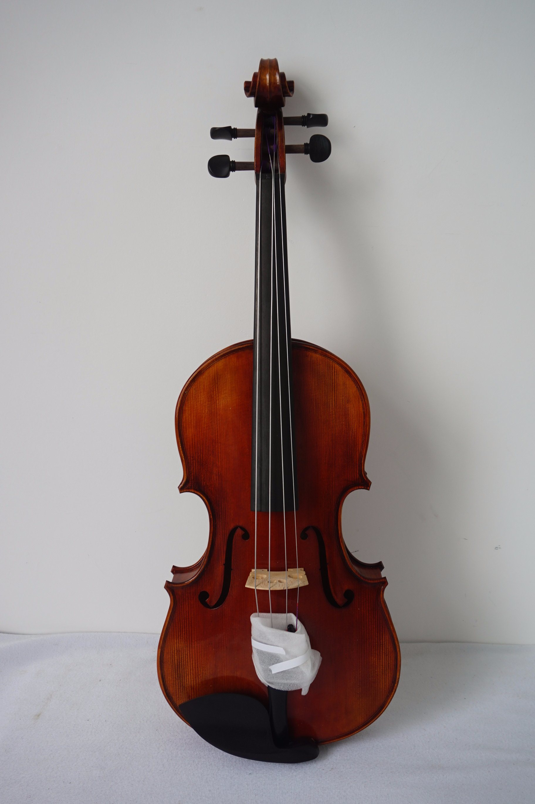
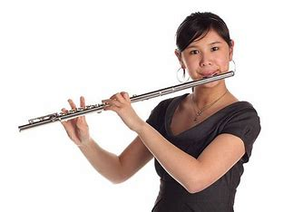

-
Le Violon
Le violon est l’un des instruments de musique les plus populaires au monde. Il est également l’un des plus anciens, ayant été inventé au 15ᵉ siècle. Le violon est utilisé dans de nombreux genres de musique, du classique au folk en passant par le jazz et le rock.
-
Le Piano

Le piano est un instrument de musique polyphonique, à clavier, de la famille des cordes frappées.
-
La Guitare
La guitare est un instrument à cordes pincées. Les cordes sont disposées parallèlement à la table d'harmonie et au manche, généralement coupé de frettes, sur lesquelles on appuie les cordes, d'une main, pour produire des notes différentes. L'autre main pince les cordes, soit avec les ongles et le bout des doigts, soit avec un plectre (ou médiator). La guitare a le plus souvent six cordes.
-
Le Saxophone
Le saxophone est un instrument de musique à vent, appartenant à la famille des bois. Il a été inventé par le Belge Adolphe Sax et breveté à Paris le 21 mars 1846. Il ne doit pas être confondu avec le saxhorn, de la famille des cuivres, mis au point, lui aussi, par Adolphe Sax. Le saxophone est généralement en laiton, bien qu'il en existe certains en cuivre, en argent, en plastique ou plaqués en or.
-
La Clarinette

La clarinette (du provençal clarin désignant un hautbois1) est un instrument de musique à vent de la famille des bois caractérisé par son anche simple et sa perce quasi cylindrique. Elle aurait été créée vers 1690 par Johann Christoph Denner (1655-1707) à Nuremberg sur la base d'un instrument à anche simple plus ancien : le « chalumeau ». La clarinette soprano (en si♭) est le modèle le plus commun.
-
La Flûte
Terme générique, une flûte (ou flute) est un instrument de musique à vent dont le son est créé par l'oscillation d'un jet d’air autour d'un biseau droit, en encoche ou en anneau. Ce souffle peut être dirigé librement par l'instrumentiste dans le cas des flûtes traversières, des instruments de type quena ou encore des flûtes de Pan, ou canalisé par un conduit en étant émis par le musicien lui-même dans le cas des différents types flûtes à bec ou en étant créé par une soufflerie mécanique dans le cas du jeu d'orgue.
-
La Batterie

Instrument de percussion, constitué de fûts en peau et cymbales, ou un groupe constitué de plusieurs musiciens jouant de ces instruments.
-
La Harp

La harpe est un instrument de musique à cordes pincées de forme le plus souvent triangulaire, muni de cordes tendues de longueurs variables dont les plus courtes donnent les notes les plus aiguës. C'est un instrument asymétrique, contrairement à la lyre dont les cordes sont tendues entre deux montants parallèles. L'instrumentiste qui joue de la harpe est appelé harpiste.